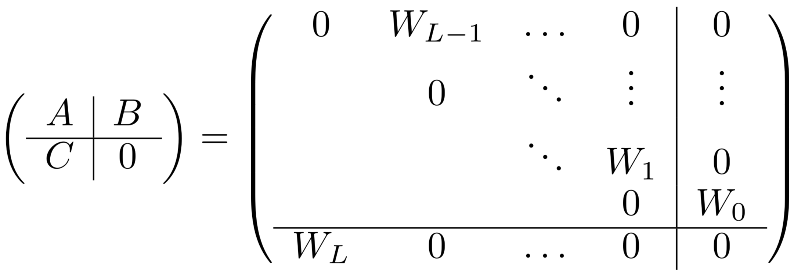
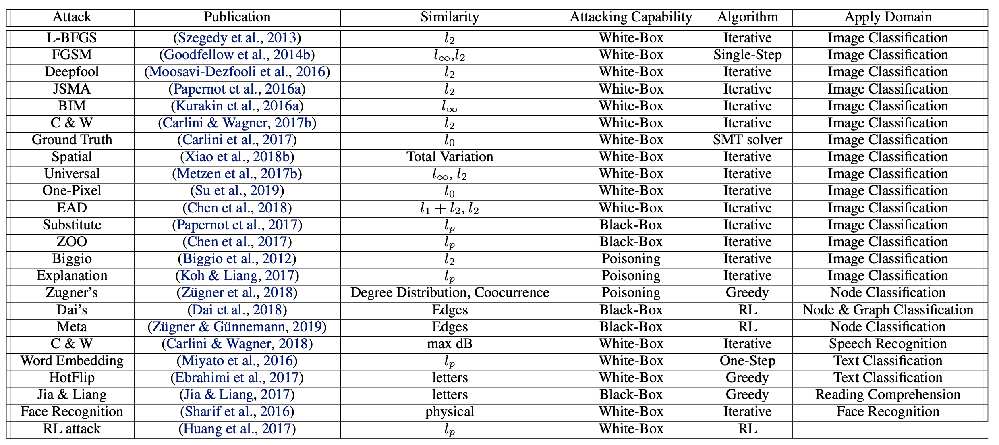

Deep learning theory is a complex emerging field - this post contains links displaying some different interesting research directions
1.6. dl theory¶
1.6.1. theoretical studies¶
DNNs display many surprising properties
surprising: more parameters yields better generalization
surprising: lowering training error should be harder
Many things seem to contribute to the inductive bias of DNNs: SGD, dropout, early stopping, resnets, convolution, more layers…all of these are tangled together and many things correlate with generalization error…what are the important things and how do they contribute?
some more concrete questions:
what is happening when training err stops going down but val err keeps going down (interpolation regime)?
what are good statistical markers of an effectively trained DNN?
how far apart are 2 nets?
1.6.1.1. functional approximation¶
dnns are very hard to study in the parameter space (e.g. swapping two parameters changes things like the Hessian), easier to to study in the function space (e.g. the input-output relationship)
nonlinear approximation (e.g. sparse coding) - 2 steps
construct a dictionary function (T)
learn linear combination of the dictionary elements (g)
background
\(L^2\) function (or function space) is square integrable: \(|f|^2 = \int_X |f|^2 d\mu\), and \(|f|\) is its \(L_2\)-norm
Hilbert space - vector space w/ additional structure of inner product which allows length + angle to be measured
complete - there are enough limits in the space to allow calculus techniques (is a complete metric space)
composition allows an approximation of a function through level sets (split it up and approximate on these sets) - Zuowei Shen (talk, slides)
composition operation allows an approximation of a function f through level sets of f –
one divides up the range of f into equal intervals and approximate the functions on these sets
nonlinear approximation via compositions (shen 2019)
how do the weights in each layer help this approximation to be more effective?
here are some thoughts – If other layers are like the first layer, the weights “whiten” or make the inputs more independent or random projections – that is basically finding PC directions for low-rank inputs.
are the outputs from later layers more or less low - rank?
I wonder how this “whitening” helps level set estimation…
nonlinear approximation and (deep) relu nets - also comes with slides
1.6.1.2. inductive bias=implicit regularization: gradient descent finds good minima¶
DL learns solutions that generalize even though it can find many which don’t due to its inductive bias.
early stopping is very similar to ridge regression
ridge regression: soln will lie in \(p-dim\) row-space of X (span of the rows)
when \(\lambda \to 0\), will give us min-norm soln (basically because we project onto \(col(X)\))
early stopping in least squares
if we initialize at 0, GD soln will always be in the row-space of X
GD will converge to min-norm soln (any soln not in the row-space will necessarily have larger norm)
similar to ridge (endpoints are the same) and can related their risks very closely when \(\lambda = 1/t\), where \(t\) is GD time iterate
assume gradient flow: take step-size to 0
srebro understanding over-parameterization
ex. gunasekar et al 2017: unconstrained matrix completion
grad descent on U, V yields min nuclear norm solution
-
sgd on logistic reg. gives hard margin svm
deep linear net gives the same thing - doesn’t actually changed anything
ex. gunaskar, 2018
linear convnets give smth better - minimum l1 norm in discrete fourier transform
ex. savarese 2019
infinite width relu net 1-d input
weight decay minimization minimizes derivative of TV
How do infinite width bounded norm networks look in function space? (savarese…srebro 2019)
minimal norm fit for a sample is given by a linear spline interpolation (2 layer net)
analytic theory of generalization + transfer (ganguli 19)
deep linear nets learn important structure of the data first (less noisy eigenvectors)
datasets for measuring causality
Inferring Hidden Statuses and Actions in Video by Causal Reasoning - about finding causality in the video, not interpretation
PL condition = Polyak-Lojawsiewicz condition guarantees global convergence of loca methods
\(||\nabla f(x)||^2 \geq \alpha f(x) \geq 0\)
1.6.1.3. semantic biases: what correlations will a net learn?¶
imagenet models are biased towards texture (and removing texture makes them more robust)
eval w/ simulations (reviewer argued against this)
causality in dnns talk by bottou
on mnist, color vs shape will learn color
A mathematical theory of semantic development in deep neural networks
Emergence of Invariance and Disentanglement in Deep Representations (achille & soatto 2018)
information in the weights as a measure of complexity of a learned model (information complexity)
IB Lagrangian between the weights of a network and the training data, as opposed to the traditional one between the activations and the test datum
explains tradeoff between over/underfitting
On Dropout, Overfitting, and Interaction Effects in Deep Neural Networks (lengerich..caruana, 2020)
use ANOVA to meaure 1st/2nd/3rd order effects and such
approximate ANOVA decomp. using boosted trees of depth based on a particular order
they find that increasing dropout rate forces nets to emphasize lower-order effects
An Investigation of Why Overparameterization Exacerbates Spurious Correlations
overparameterization can hurt test error on minority groups despite improving average test error when there are spurious correlations in the data
1.6.1.4. expressiveness: what can a dnn represent?¶
1.6.1.5. complexity + generalization: dnns are low-rank / redundant parameters¶
measuring complexity
functional decomposition (molnar 2019)
decompose function into bias + first-order effects (ALE) + interactions
3 things: number of features used, interaction strength, main effect complexity
parameters are redundant
predicting params: weight matrices are low-rank, decompose into UV by picking a U
rethinking the value of pruning: pruning and training from scratch, upto 30% size
Lottery ticket: pruning and training from initial random weights, upto 1% size (followup)
T-Net: Parametrizing Fully Convolutional Nets with a Single High-Order Tensor
generalization
1.6.1.6. kernels¶
To understand deep learning we need to understand kernel learning - overfitted kernel classifiers can still fit the data well
kernels wiki: kernel memorizes points then uses dists between points to classify
wavelet support vector machines - kernels using wavelets
neural tangent kernel (jacot et al. 2018)
at initialization, artificial neural networks (ANNs) are equivalent to Gaussian processes in the infinite-width limit
evolution of an ANN during training can also be described by a kernel (kernel gradient descent)
different types of kernels impose different things on a function (e.g. want more / less low frequencies)
gradient descent in kernel space can be convex if kernel is PD (even if nonconvex in the parameter space)
lazy training regime - small change in weights results in big change in loss func
so final weights are close to original weights
more precisely, gradient norm is much larger than hessian norm
jacobian doesn’t change during training \(\implies\) NTK is pretty constant throughout training
Scaling description of generalization with number of parameters in deep learning (geiger et al. 2019)
number of params = N
above 0 training err, larger number of params reduces variance but doesn’t actually help
ensembling with smaller N fixes problem
the improvement of generalization performance with N in this classification task originates from reduced variance of fN when N gets large, as recently observed for mean-square regression
understanding the neural tangent kernel (arora et al. 2019)
method to compute the kernel quickly on a gpu
On the Inductive Bias of Neural Tangent Kernels (bietti & mairal 2019)
Kernel and Deep Regimes in Overparametrized Models (Woodworth…Srebro 2019)
transition between kernel and deep regimes
The HSIC Bottleneck: Deep Learning without Back-Propagation (Ma et al. 2019)
directly optimize information bottleneck (approximated by HSIC) yields pretty good results
1.6.1.7. nearest neighbor comparisons¶
1.6.1.8. random projections¶
relation to bousquet - fitting random polynomials
hierarchical sparse coding for images (can’t just repeat sparse coding, need to include input again)
random projections in the brain….doing locality sensitive hashing (basically nearest neighbors)
1.6.1.9. implicit dl + optimization¶
implicit deep learning (el ghaoui et al. 2019)
\(\hat y (u) = Cx + D u \), where \(x = \phi(Ax + Bu)\)
here, \(u\) is a new input
\(x\) is a hidden state which represents some hidden features (which depends on \(u\))
well-posedness - want x to be unique for a given u
\(A, B\) are matrices which let us compute \(x\) given \(u\)
\(C, D\) help us do the final prediction (like the final linear layer)
ex. feedforward nets
consider net with \(L\) layers
\(x_0 = u\)
\(x_{l + 1} = \phi_l (W_l x_l)\)
\(\hat y (u) = W_L x_L\)
rewriting in implicit form
\(x = (x_L, ..., x_1)\) - concatenate all the activations into one big vector

ex. \(Ax + Bu= \begin{bmatrix} W_{L-1}x_{L-1} \\ W_{L-2} x_{L-2} \\ \vdots \\ W_1x_1 \\ \mathbf 0\end{bmatrix} + \begin{bmatrix} 0 \\ 0 \\ \vdots \\ 0 \\ W_0 u \end{bmatrix}\)
lifted neural networks (askari et al. 2018)
can solve dnn \(\hat y = \phi(W_2 \phi (W_1X_0))\) by rewriting using constraints:
\(X_1 = \phi(W_1 X_0)\)
\(X_2 = \phi(W_2 X_1)\)
\(\begin{align} &\min (y - \hat y)^2\\s.t. X_1 &= \phi(WX_0)\\X_2 &= \phi(WX_1)\end{align}\)
can be written using Lagrangian multipliers: \(\min (y - \hat y)^2 + \lambda_1( X_1 - \phi(WX_0)) + \lambda_2(X_2 - \phi(WX_1))\)
Fenchel Lifted Networks: A Lagrange Relaxation of Neural Network Training (gu et al. 2018)
in the lifted setting above, can replace Lagrangian with simpler expression using Fenchel conjugates
robust optimization basics
immunize optimization problems against uncertainty in the data
do so by having worst-case constraints (e.g. \(a < 5, \forall a\))
local robustness - maximize radius surrounding parameter subject to all constraints (no objective to maximize)
global robustness - maximize objective subject to robustness constraint (trades off robustness with objective value)
non-probabilistic robust optimization models (e.g. Wald’s maximin model: \(\underset{x}{\max} \underset{u}{\min} f(x, u)\)
also are probabilistically robust optimization
distributional robustness - using moments in the dl work
ch 4 and ch10 of robust optimization book (bental, el ghaoui, & nemirovski 2009)
Certifying Some Distributional Robustness with Principled Adversarial Training (sinha, namkoong, & duchi 2018)
want to guarantee performance under adversarial input perturbations
considering a Lagrangian penalty formulation of perturbing the underlying data distribution in a Wasserstein ball
during training, augments model parameter updates with worst-case perturbations of training data
little extra cost and achieves guarantees for smooth losses
On Distributionally Robust Chance-Constrained Linear Programs (calafiore & el ghaoui 2006)
linear programs where data (in the constraints) is random
want to enforce the constraints up to a given prob. level
can convert the prob. constraints into convex 2nd-order cone constraints
under distrs. for the random data, can guarantee constraints
Differentiable Convex Optimization Layers (agrawal et al. 2019)
1.6.1.10. statistical physics¶
Statistical Mechanics of Deep Learning (bahri et al. 2019)
what is the advantage of depth - connect to dynamical phase transitions
there are several function which require only polynomial nodes in each layer for deep nets, but exponential for shallow nets
what is the shape of the loss landscape - connect to random Gaussian processes, sping glasses, and jamming
how to pick a good parameter initialization?
bounding generalization error
often, generalization bounds take the form \(\epsilon_{test} \leq \epsilon_{train} + \frac {\mathcal C (\mathcal F)} p\), where \(\mathcal C (\mathcal F)\) is the complexity of a function class and \(p\) is the number of examples
ex. VC-dimension, Rademacher complexity
alternative framework: algorithmic stability - will generalize if map is stable wrt perturbations of the data \(\mathcal D\)
altenative: PAC bounds suggest if distr. of weights doesn’t change much during training, generalization will be succesful
deep linear networks
student learns biggest singular values of the input-output correlation matrix \(\Sigma = \sum_i y_i x_i^T\), so it learns the important stuff first and the noise last
infinite-width limit
if parameters are random, indcues a prior distribution \(P(\mathcal F)\) over the space of functions
in th limit of infinite width, this prior is Gaussian, with a specific correlation kernel
learning is similar to learning the Bayesian posterior \(P(f|data)\), but connecting this to sgd is still not clear
Neural Mechanics: Symmetry and Broken Conservation Laws in Deep Learning Dynamics (kunin et al. 2020)
no assumptions about DNN architecture or gradientflow
instead, assumptions on symmetries embedded in a network’s architecture constrain training dynamics
similar to Noether’s thm in physics
can much better analytically describe learning dynamics
weights have a differentiable symmetry in the loss if the loss doesn’t change under a certain differentiable transformation of the weights
ex. translation symmetry - for layer before softmax, we get symmetries across weights that shift all outputs
ex. scale symmetry - inputs to batch normalization are invariant to scaling
ex. rescale symmetry - scaling up/down 2 things which multiply or add
modeling discretization
1.6.2. empirical studies¶
1.6.2.1. interesting empirical papers¶
modularity (“lottery ticket hypothesis”)
contemporary experience is that it is difficult to train small architectures from scratch, which would similarly improve training performance - lottery ticket hypothesis: large networks that train successfully contain subnetworks that–when trained in isolation–converge in a comparable number of iterations to comparable accuracy
Truth or backpropaganda? An empirical investigation of deep learning theory
1.6.2.2. adversarial + robustness¶
robustness may be at odds with accuracy (madry 2019)
adversarial training helps w/ little data but hurts with lots of data
adversarially trained models have more meaningful gradients (and their adversarial examples actually look like other classes)
Generalizability vs. Robustness: Adversarial Examples for Medical Imaging
Towards Robust Interpretability with Self-Explaining Neural Networks
Adversarial Attacks and Defenses in Images, Graphs and Text: A Review (xu et al. 2019)
Adversarial examples are inputs to machine learning models that an attacker intentionally designed to cause the model to make mistakes
threat models
poisoning attack (insert fake samples into training data) vs. evasion attack (just evade at test time)
targeted attack (want specific class) vs. non-targeted attack (just change the prediction)
adversary’s knowledge
white-box - adversary knows everything
black-box - can only feed inputs and get outputs
gray-box - might have white box for limited amount of time
security evaluation
robustness - minimum norm perturbation to change class
adversarial loss - biggest change in loss within some epsilon ball


AugMix: A Simple Data Processing Method to Improve Robustness and Uncertainty (hendrycks et al. 2020)
do a bunch of transformations and average images to create each training image
certifying robustness
bound gradients of f around x - solve SDP for 2-layer net (raghunathan, steinhardt, & liang 2018, iclr)
relax SDP and then applies to multilayer nets (raghunathan et al. 2018)
improved optimizer for the SDP (dathathri et al. 2020)
interval bound propagation - instead of passing point, pass an interval where it could be
works well for word substitions (jia et al. 2019)
RobEn - cluster words that are confusable + give them the same encoding when you train (jones et al. 2020)
then you are robust to confusing the words
unlabeled data + self-training helps
training robust models has higher sample complexity than training standard models
tradeoff between robustness and accuracy (raghunathann et al. 2020)
adding valid data can hurt even in well-specified, convex setting
robust self-training eliminates this tradeoff in linear regression
sample complexity can be reduced with unlabeled examples (carmon et al. 2019)
distributional robust optimization
instead of minimizing training err, minimize maximum training err over different perturbations
hard to pick the perturbation set - can easily be too pessimistic
these things possibly magnify disparities
larger models
selective classification
feature noise
removing spurious features
group DRO (sagawa et al. 2020) - maximize error for worst group
need to add regularization to keep errors from going to 0
training overparameterized models makes this problem worse
abstain from classifying based on confidence (jones et al. 2020)
makes error rates worse for worst group = selective classification can magnify disparities
adding feature noise to each group can magnify disparities
domain adaptation
standard domain adaptation: labeled (x, y) in source and unlabeled x in target
gradual domain adaptation - things change slowly over time, can use gradual self-training (kumar et al. 2020)
In-N-Out (xie et al. 2020) - if we have many features, rather than using them all as features, can use some as features and some as targets when we shift, to learn the domain shift
1.6.2.3. tools for analyzing¶
dim reduction: svcca, diffusion maps
viz tools: bei wang
1d: plot loss by extrapolating between 2 points (start/end, 2 ends)
goodfellow et al. 2015, im et al. 2016
2d: plot loss on a grid in 2 directions
important to think about scale invariance (dinh et al. 2017)
want to scale direction vector to have same norm in each direction as filter
use PCA to find important directions (ex. sample w at each step, pca to find most important directions of variance)
1.6.2.4. misc theoretical areas¶
deep vs. shallow rvw
information bottleneck: tishby paper + david cox follow-up
Emergence of Invariance and Disentanglement in Deep Representations
1.6.2.5. comparing representations¶
1.6.2.6. simple papers¶
1.6.2.7. adam vs sgd¶
svd parameterization rnn paper: inderjit paper
original adam paper: kingma 15
regularization via SGD (layers are balanced: du 18)
marginal value of adaptive methods: recht 17
comparing representations: svcca
montanari 18 pde mean field view
1.6.2.8. memorization background¶
“memorization” as the behavior exhibited by DNNs trained on noise, and conduct a series of experiments that contrast the learning dynamics of DNNs on real vs. noise data
look at critical samples - adversarial exists nearby
networks that generalize well have deep layers that are approximately linear with respect to batches of similar inputs
networks that memorize their training data are highly non-linear with respect to similar inputs, even in deep layers
expect that with respect to a single class, deep layers are approximately linear
memorization in overparameterized autoencoders
autoencoders don’t lean identity, but learn projection onto span of training examples = memorization of training examples
sometimes output individual training images, not just project onto space of training images
https://arxiv.org/pdf/1810.10333.pdf
https://arxiv.org/pdf/1909.12362.pdf
https://pdfs.semanticscholar.org/a624/6278cb5e2d0ab79fe20fe20a41c586732a11.pdf
1.6.2.9. probabilistic inference¶
multilayer idea
1.6.2.10. architecture search background¶
ideas: nested search (retrain each time), joint search (make arch search differentiable), one-shot search (train big net then search for subnet)
1.6.2.11. bagging and boosting¶
analyzing bagging (buhlmann and yu 2002)
boosting with the L2 loss (buhlmann & yu 2003)
boosting algorithms as gradient descent (mason et al. 2000)
1.6.3. basics¶
demos to gain intuition
overview / reviews
some people involved: nathan srebro, sanjeev arora, jascha sohl-dickstein, tomaso poggio, stefano soatto, ben recht, olivier bousquet, jason lee, simon shaolei du
interpretability: cynthia rudin, rich caruana, been kim, nicholas papernot, finale doshi-velez
neuro: eero simoncelli, haim sompolinsky